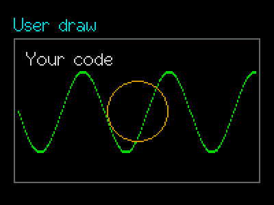

SuperUserDraw
The usual frame, label, focus and dimming; everything inside is yours.
Your drawingsrc/SuperUserDraw.h
What it looks like

Real renders from the library (headless, dark theme, Font2, shown at 2x).
Quick start
SuperUserDraw pad(&lcd, 10, 10, 160, 100 /*body height*/);
pad.SetBorder(1, TFT_WHITE); pad.SetLabel("Pad");
pad.SetOnDraw([](SuperUserDraw& c, lgfx::LGFX_Sprite* s, const SuperRect& r, void*) {
s->drawCircle(r.x + r.w/2, r.y + r.h/2, 30, TFT_GREEN);
});
pad.SetAutoRedraw(50); // animationUnique features
- Normal mode:
spris the control's render sprite, valid only during the callback, arriving holding the background and frame. The callback runs on every redraw (including focus changes) and must paint everything. - Persistent canvas (
SetPersistent(true)): a body-size canvas that keeps what you drew (traces, sketch pads, games). The callback runs only onRepaint()or auto-redraw; focus changes just re-blit. Costs width x height x 2 bytes. SetAutoRedraw(ms)repaints on a timer (driven by SuperForm);DeltaMs()gives the time since the previous draw event.- Pointer events:
SetOnPointer(fn)receives PRESS, MOVE, TAP, LONG_PRESS and always RELEASE, positioned relative to the body (may be outside while dragging). - Clip rectangle is already set to the body: drawing outside it is clipped.
GUI workflow
Without a pointer callback the control is display only (add with focusable=false). With one, touching the control focuses it and runs the gesture as an edit: it starts on touch-down, and when the finger lifts the edit ends and SetOnAccept fires. A key-started edit with no finger ends after PointerGraceMs (150 ms).
Event workflow
draw event: void fn(SuperUserDraw& ctl, lgfx::LGFX_Sprite* spr, const SuperRect& body, void* user)
pointer event: void fn(SuperUserDraw& ctl, const SuperUserPointer& e, void* user) // e.Type, e.X, e.Y, e.StartX, e.StartYInside the pointer callback call ctl.Invalidate() or Repaint() to redraw; the control also refreshes after every pointer event.
Main API
| Call | What it does |
|---|---|
SetOnDraw(fn,user) | Your drawing |
SetOnPointer(fn,user) | Touch events |
SetOnAccept(fn,user) | Gesture finished |
SetPersistent(bool) | Own canvas that keeps its pixels |
GetCanvas() | Draw outside the event (persistent mode) |
Repaint() / Invalidate() | Ask for a redraw |
SetAutoRedraw(ms) | Timer repaint |
GetBodyRect() | Body rectangle in control coordinates |
Tips and tricks
TipUse persistent mode for anything incremental; use normal mode for things that are cheap to redraw (it needs no extra RAM).
TipDraw in the
r rectangle you are given, not at fixed (0,0).Pitfalls
Watch outDo not keep the sprite pointer in normal mode, block in the callback or draw other controls from it.
Watch outThe sprite is 16-bit byte-swapped RGB565: use LovyanGFX drawing calls, not the raw buffer. Avoid colour 0x0001 (transparent key when labels are not opaque).
Watch outResizing the body recreates the persistent canvas: the picture is lost and the draw event runs again.